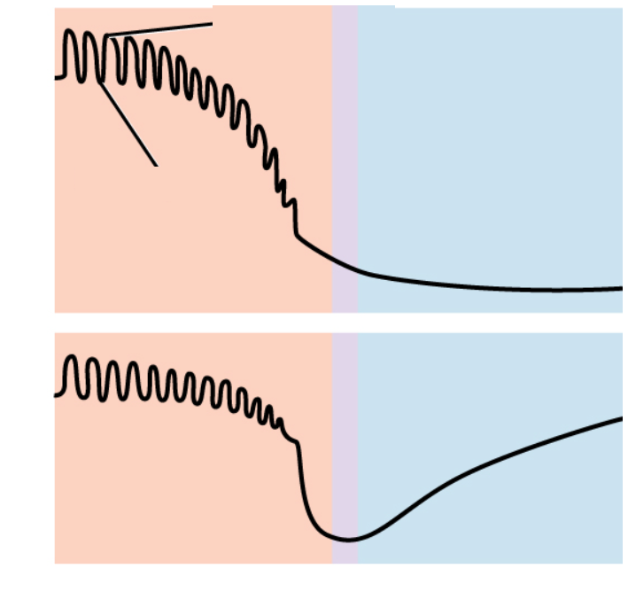

לפניכם גרפים המתארים את לחץ הדם ואת מהירות זרימת הדם בכלי הדם השונים.

לחץ סיסטולילחץ דיאסטולילחץ הדםמהירות הזרימהעורקים / עורקיקיםנימיםורידונים / ורידים
איור: OpenStax, Biology · CC BY 4.0 · התוויות תורגמו לעברית
הגרף העליון: לחץ הדם
א. תארו את הגרף העליון.
בעורקים לחץ הדם הגבוה ביותר, והוא עולה ויורד במחזוריות: בין לחץ סיסטולי ללחץ דיאסטולי. לאורך העורקים והעורקיקים הלחץ יורד, והתנודות הולכות וקטנות. הירידה החדה ביותר היא בעורקיקים. בנימים, בוורידונים ובוורידים הלחץ נמוך, כמעט ללא תנודות, והוא ממשיך לרדת בהדרגה.
ב. ציינו שני גורמים שמשפיעים על השינויים הנראים בגרף.
שניים מתוך: התכווצות והרפיה של החדר השמאלי (פעילות הלב); החיכוך של הדם בדפנות כלי הדם (ההתנגדות לזרימה, שתלויה בקוטר כלי הדם); הגמישות של דופן העורקים (סיבים אלסטיים).
ג. הסבירו את השינויים הנראים בגרף.
בהתכווצות החדר השמאלי נדחס דם לאבי העורקים, והלחץ בעורקים עולה (לחץ סיסטולי). בהרפיית החדר הלחץ יורד (לחץ דיאסטולי), אבל לא לאפס: הדופן האלסטית של העורקים, שנמתחה, חוזרת לממדיה ודוחסת את הדם. לאורך הדרך הדם מתחכך בדפנות כלי הדם, ולכן הלחץ יורד. העורקיקים צרים וההתנגדות בהם גדולה, ולכן בהם הירידה החדה ביותר, והתנודות כמעט נעלמות. בנימים ובוורידים הלחץ נמוך.
הגרף התחתון: מהירות זרימת הדם
א. תארו את הגרף התחתון.
בעורקים מהירות הזרימה גבוהה, והיא משתנה במחזוריות עם פעימות הלב. בעורקיקים המהירות יורדת, ובנימים היא הנמוכה ביותר. בוורידונים ובוורידים המהירות עולה בהדרגה, אבל נשארת נמוכה מהמהירות בעורקים.
ב. הסבירו מה היתרון של מהירות הזרימה שמתרחשת בנימים.
בנימים הזרימה האיטית ביותר, ולכן הדם שוהה בהם זמן רב יותר. כך יש זמן למעבר חומרים בדיפוזיה בין הדם לנוזל הבין־תאי ולתאים: חמצן וגלוקוז עוברים לתאים, ופחמן דו־חמצני ופסולת עוברים לדם.
משתנים
ג. בכל אחד משני הגרפים: מהו המשתנה הבלתי תלוי ומהו המשתנה התלוי?
המשתנה הבלתי תלוי בשני הגרפים: סוג כלי הדם (המיקום לאורך מערכת כלי הדם). המשתנה התלוי: בגרף העליון לחץ הדם, ובגרף התחתון מהירות זרימת הדם.
ד. היעזרו בשני הגרפים: האם מהירות הזרימה תלויה רק בלחץ הדם? הסבירו.
לא. בנימים ובוורידים לחץ הדם נמוך ויורד בהדרגה, ובכל זאת המהירות בוורידים גבוהה מבנימים. מהירות הזרימה תלויה גם בשטח החתך הכולל: בנימים שטח החתך הכולל הגדול ביותר, ולכן הזרימה בהם האיטית ביותר. בוורידים שטח החתך הכולל קטן יותר, והמהירות עולה.
כותבים תשובה (לפחות שלוש מילים), ורק אז אפשר לפתוח את התשובה ולהשוות.
היחידה מתבססת על חומרי מט״ח ומורחבת בחומרים נוספים